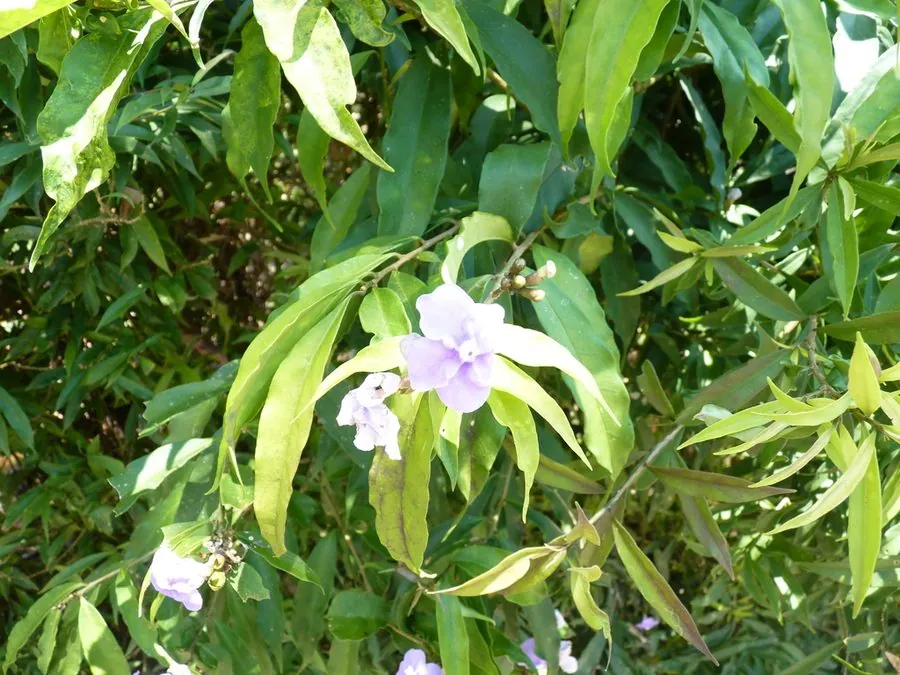

灌木与花木 · 植物界
大花鸳鸯茉莉 Brunfelsia grandiflora

茄科鸳鸯茉莉属常绿灌木，花大、初开深紫后转白，香气浓烈，是鸳鸯茉莉中花型最大的著名观赏种类。
- 分类
- 门被子植物门纲木兰纲目茄目科茄科属鸳鸯茉莉属
- 栖息环境
- 亚马孙边缘的热带雨林与林缘，喜高温高湿、阳光充足
- 地理分布
- 原产秘鲁、玻利维亚、巴西；中国华南、云南南部引种栽培
- 保护级别
- IUCN 暂无评估；野生种群受雨林砍伐影响，栽培较广
物种志
大花鸳鸯茉莉为常绿灌木或小乔木，高 2–3 米，分枝粗壮。叶片椭圆状倒卵形，长 10–15 厘米，叶脉下陷。花单生叶腋，花冠高脚碟状，直径 6–8 厘米，初开深紫色，渐变为淡紫、白色，花冠筒细长，香气浓烈；果实为浆果状，成熟时橙黄。
本种原产秘鲁、玻利维亚与巴西亚马孙地区，喜高温高湿、阳光充足的环境，在中国华南与云南南部常作庭园花木。它的花比鸳鸯茉莉更大、色彩更深，开花时香气可弥漫整个庭院。与同属植物一样，全株含生物碱，误食可致呕吐、震颤与神经系统症状，栽培时需注意防范儿童与宠物误食。热带地区一年可多次开花，是优良的香花灌木。
形态与习性
- 株高2–3 米，分枝粗壮
- 花期5–10 月，花深紫转白
- 花径6–8 厘米，为鸳鸯茉莉中最大
- 光照喜光，幼苗期适当遮阴
- 水分喜湿润，忌积水
- 土壤肥沃疏松的微酸性壤土
- 毒性全株含生物碱，误食可致中毒
趣味知识
- 大花鸳鸯茉莉的花径可达 8 厘米，比普通鸳鸯茉莉大近一倍。
- 它的香气浓烈，在傍晚与清晨最明显，常被用作香花庭院植物。
- 花色由深紫渐变为白，单朵花只开两三天，但整株花期可持续数月。
- 它原产亚马孙雨林边缘，对低温和干旱都比较敏感。